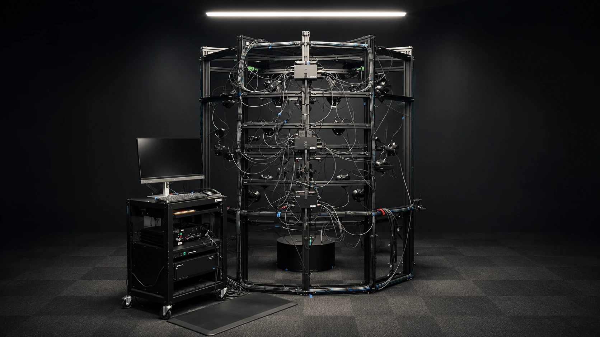

Capture the
physical product.
High-resolution imaging from multiple angles and lighting conditions, built around footwear and apparel.
Multi-view + controlled lightingDesigning the scanning platform.
Building Deep Capture Studio.

A product carries shape, surface behavior and fine detail that need to survive the move into digital tools. The challenge was connecting capture, processing and creation into a system that could support more than a single final image.
Footwear and apparel, with complex form and material behavior.
Capture, reconstruction, processing and the tools that use the result.
A foundation for 3D, AI-assisted imagery and creative workflows.
I designed the scanning platform and built Deep Capture Studio. Researching and testing photogrammetry, then refining the workflows, helped connect capture with the tools that put the result to use.
A foundation for high-resolution product imaging from multiple views and lighting conditions.
Bringing the capture work into a connected system for processing and downstream use.
Photogrammetry research and testing, with an expanding set of 3D, vision and AI tools.
A platform.
A studio.
A connected system.
The system connects detailed product capture with materials, 3D, AI and automation. These capabilities carry the physical product into new digital workflows.
High-resolution imaging from multiple angles and lighting conditions, built around footwear and apparel.
Multi-view + controlled lightingGeometry and material information, including normals, roughness, metalness, height and ultraviolet capture.
Form + material responseComputer vision, segmentation and LoRA training, supported by deterministic and agentic workflows.
Vision + training + workflowA trained model, 3D representation and nearby source photographs support rendering the selected product view.
Learned rendering + source detail3D representations and product imagery that can support creative, marketing and sales workflows.
Digital assets + product imageryThe work reaches from 3D reconstruction into computer vision, model training and AI-assisted workflows. Neural rendering is one extension of that same capture foundation.
Repeatable processing handles defined steps. Agentic workflows connect tools and support more open-ended tasks, with review at the points that matter.
Segmentation and LoRA training extend what can be done with the captured product, from image processing to creative exploration.
A trained model works with a 3D representation, camera positions and nearby source photographs to render the chosen view. The aim is high-fidelity, high-resolution product imagery grounded in real capture.
A connected approach to capture, 3D and AI, built around making the product useful across digital workflows.
Back to the project ↑